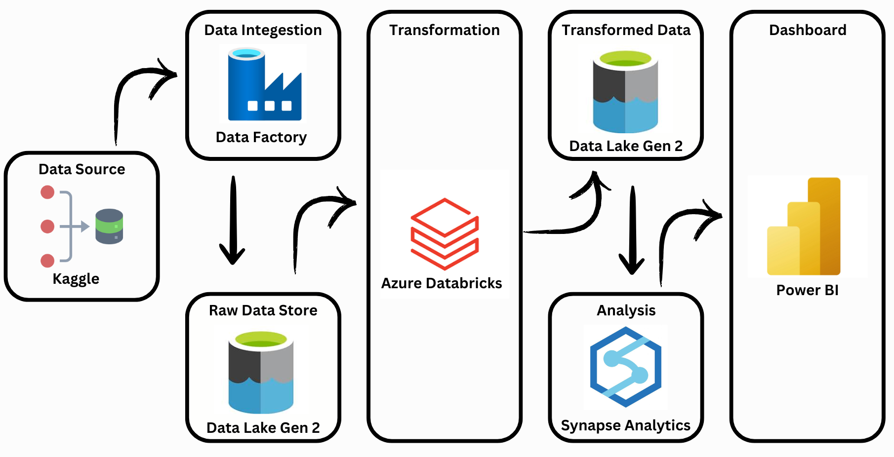
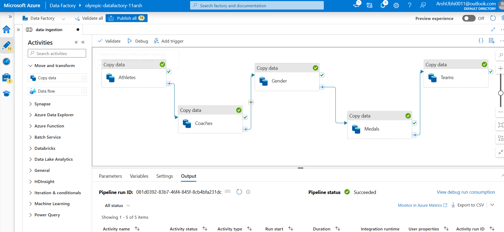
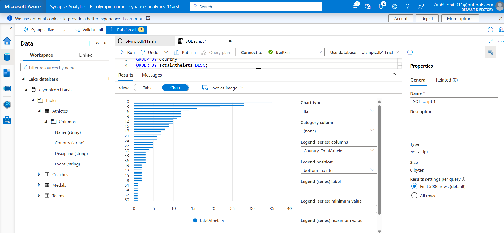

0
Datasets Processed
0 min
ETL Execution Time
0
KPIs Derived
Hover over each metric to reveal a quick summary of its impact on the data pipeline.
Overview
This project demonstrates the design and implementation of a full-scale data engineering pipeline using Microsoft Azure. Inspired by the global scope of the 2024 Paris Olympics, I simulated a real-world, production-grade workflow to extract raw data, apply scalable transformations, and generate actionable insights using the modern Azure stack.

The Inspiration
When the Paris Olympics dominated global headlines, I challenged myself: could I build a cloud-native data solution that mirrors how businesses track, analyze, and report on real-time performance data? This project became a self-directed bootcamp into Azure Data Factory, Databricks, Synapse Analytics, and Data Lake Gen2.
Tech Stack & Tools
- Ingestion: Azure Data Factory – pipelines & scheduling
- Storage: Azure Data Lake Gen2 – secure containers
- Processing: Azure Databricks (PySpark) – scalable ETL
- Analytics: Azure Synapse Analytics – external tables & SQL
- Data Source: Kaggle – Olympic stats & metadata
Data Model
-
athletes.csv– athlete details by NOC, gender, and event -
coaches.csv– nationality-linked coaching assignments -
entriesgender.csv– gender distribution per sport -
medals.csv– medal breakdowns by country & sport teams.csv– NOC-based team affiliations

Implementation Breakdown
- ADF: Parameterized pipelines for ingesting & versioning datasets
- Databricks: PySpark logic for cleaning, feature engineering, and optimization
- Synapse: Modeled a star schema with external tables for performant querying

Business Insights
Enabled dynamic queries to explore medal efficiency, gender distribution, and nation-wise performance trends. Output was clean, structured, and ready to plug into Power BI or Tableau dashboards for visual storytelling.
My Role
This was a solo build—every cloud resource, data pipeline, and SQL query was designed and deployed by me. I handled edge cases, incorporated monitoring logic, and ensured that the system could evolve with new data drops—just like a real-world solution would demand.
Outcomes
- Cleaned and transformed 5+ datasets into a structured star schema
- Pipeline latency remained under 3 minutes end-to-end
- Validated KPIs ready for stakeholder dashboards and reporting
What I Learned
- Architected ETL pipelines using cloud-native best practices
- Hands-on with Spark performance tuning and partitioning
- Integrated reliability into every layer—from ingestion to insights
- Turned real data into decision-ready formats used by businesses
Why This Project Matters
This wasn’t just a one-off exercise—it was a deliberate dive into the heart of modern data engineering.
- ✔️ Build scalable, cloud-based data pipelines from the ground up
- ✔️ Think like a data engineer, not just a coder
- ✔️ Deliver clean, structured, insight-ready data that decision-makers can act on
It’s one of several projects that reflect my hands-on skills,
curiosity, and drive to solve real-world problems with real-world
tools.
Together, they form the foundation of my data-driven mindset—and
I’m just getting started.